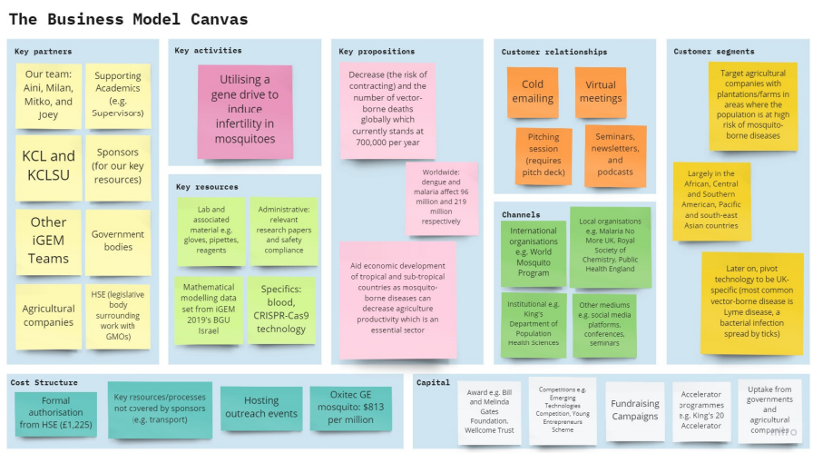

Our Plan
Entrepreneuership
We are in the process of creating a pitch deck and have sent out cold emails and messages - the latter via LinkedIn - to companies such as Wilmar International, Sotexpro SA, and Top Glove. Wilmar International has replied to us and we will be hosting pitching sessions with potential investors throughout the summer months. One resource available for viewing is the Business Model Canvas which provides a comprehensive overview of our project. Further down the line, we are also considering entering accelerator programs such as the King's 20 Accelerator and entrepreneurship competitions like the Young Entrepreneurs Scheme and Emerging Technology Scheme.
Marketing
We have collated a strong social media presence across our Facebook, Instagram, and LinkedIn pages through continuous and succinct updates of our exciting milestones in our progress. There is also a dedicated Instagram page to our SynBio Outreach Programme being done in collaboration with other UK-based iGEM teams, education charities, and youth societies. This programme is currently being promoted by the Royal Societies of Chemistry and Biology as we are currently doing the same for their competitions. We've also been utilising institutional resources such as the KCLSU and individual KCL department newsletters to garner support from our own student body.